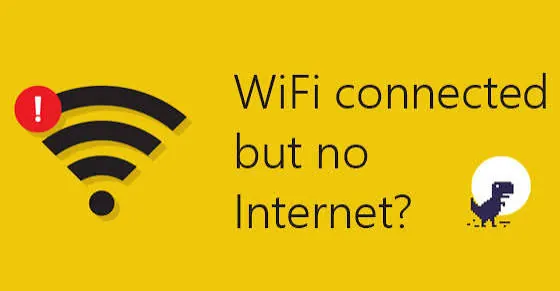

Laptops
Laptop Wi-Fi Not Working? Easy Troubleshooting Steps
Fix common laptop Wi-Fi problems with a clear troubleshooting guide covering airplane mode, network settings, routers, drivers, passwords, and connection tests.
Work Out Whether the Problem Is the Laptop or the Network
Firstly work out whether just one laptop or all devices aren’t connecting to Wi-Fi. Try connecting to the network another device such as your phone or another computer. If none of your devices are working the issue may be with your router, modem, internet or internet provider. If other devices are connecting correctly then look at your laptop settings, wireless card or network profile.
Sometimes your laptop will show that it is connected to Wi-Fi (wireless router) but may not have internet. This could be due to no internet, DNS issues with your router or needing a login page. The exact error message shown on your operating system can give you a clue.

Check Airplane Mode / Wi-Fi Switch
Start with the basics. Ensure that airplane mode has been turned off and Wi-Fi has been turned on. You can usually toggle this from your quick settings or network settings. Some laptops have a physical switch to enable/disable Wi-Fi. Some also have a shortcut using the function keys. The combination will vary depending on the manufacturer. Look for the symbols on your keyboard or consult your device manual.
If Wi-Fi isn’t appearing at all then your wireless card may be disabled, not loading the driver or not being detected. Restart your laptop once before doing anything more complicated. Sometimes there can be a temporary software error which will be solved with a complete restart.
Restart Router and Laptop
If multiple devices aren’t connecting then restart your network equipment. Save any work you need to do. Turn off your router and modem following your providers instructions. Wait for a moment then turn them both back on. Let your devices settle with the lights showing then connect your laptop. Some routers will have the modem and wireless combined. Others will have separate devices.
When restarting your router you aren’t resetting your router. This just means turning it off and back on. A reset will wipe your Wi-Fi name, password and internet provider settings. Don’t hold down your reset button unless you wish to reset.
Forget Network and Reconnect
Your Wi-Fi profile may have an old password or wrong settings. Open your networks on your laptop and select the network causing the issue. Select forget. Search for networks and reconnect with the current password. Be careful with uppercase and special characters as passwords are case sensitive.
If your network needs a login page open up your browser and try to visit a simple webpage. In some cases managed networks at work or on campus may require more certificates or account information. Contact your network administrator.
Signal Strength
If you’re experiencing slow speeds, disconnections or no connection at all then you may be too far away from your router. Move closer and try again. Thick walls, floors, metal cupboards and large items can cause interference. Neighbouring wireless networks can also affect your connection. This is common in apartments and busy office buildings.
Many routers have the option to use 2.4GHz or 5GHz. 2.4GHz will usually have a longer range and better ability to go through obstructions. 5GHz can offer faster speeds but over a shorter range. Some new kit will also have 6GHz. If there are separate networks for each band try using the one that is best for you based on how far away you are. If possible keep your router in an open central area.
Use Network Troubleshooter
Windows and other operating systems come with trouble shooting tools to help identify any common connection issues. Use the network troubleshooter. Read through the results and follow any recommendations. This can identify if your adapter is disabled, incorrect settings or not getting an IP address. On Mac check your Wi-Fi menu and Wireless Diagnostics.
This won’t fix everything but can help identify what the issue could be. Note down any error messages or codes. If it says there is an issue with your network adapter then look into your driver and device status. If it says there is an issue with your router/DNS server then check another device on the same network.
Update/Reinstall Wi-Fi Driver
Your wireless driver enables your operating system to interact with your laptops Wi-Fi. If your driver has become corrupted, outdated or not compatible this can cause intermittent connections or your wireless card not appearing. Go to your laptops manufacturers support page and find the exact model and operating system. Install the recommended wireless driver. Don’t go to random sites to download drivers.
If your Wi-Fi suddenly stopped working after updating your driver then your OS may have an option to roll back. On Windows you can open device manager to see if your adapter is enabled and if there is any error. If you’re reinstalling a driver be careful. If you don’t have any other way of getting online then download the correct installer in advance or use another device to transfer.
IP / DNS /VPN /Proxy Settings
Sometimes your network settings can cause connection issues. Your device may not be getting an IP address from your router or have incorrect manual DNS settings. If you’ve changed your network settings recently change these back to automatic. Unless your network administrator has given you specific settings.
Your connection can also be affected by a VPN. Disable your VPN temporarily and see if you can connect. Follow your workplace policies if you’re changing business security settings. If only some websites aren’t working then it could be a DNS or specific issue. Don’t enter any unknown commands or change advanced settings on your router.
Try Connecting to Another Network
Connect your laptop to a trusted mobile hotspot or authorised Wi-Fi. If you can connect then your wireless hardware is most likely working and you should look further into your original router/network settings. If you can’t connect to any networks then there could be an issue with your adapter, driver, OS or antenna.
If all your devices aren’t connecting to the internet or your modem is showing a service fault then contact your internet provider. If you’re on a managed network at work or on campus then contact your IT team. If you’ve tried all the software solutions and your wireless adapter isn’t being detected then a technician can check the hardware. Don’t open your laptop unless you’re qualified and your warranty allows you too.
Conclusion
Most issues with your laptops Wi-Fi can be narrowed down with a few simple checks. Check if other devices are having issues, disable airplane mode, restart your router, reconnect and check your signal strength. If you’re still having issues look into your drivers and network settings. Don’t assume your hardware is faulty. Try one thing at a time and contact someone if the issue seems to be with your router, provider or internal components.
Need a hand with your printer or laptop?
Printerworld sells printers, laptops and genuine supplies, and repairs and services both. Bring in your model number and we will help you get it right.